|
|

|
223 Physics Lab: The RC Circuit
|
223 & 224 Lab Overview |
Return to Physics 223 Labs
Purpose
This laboratory experiment is designed to investigate the behavior of capacitor
responses of RC circuits, the basis for most electronic timing circuits.
An oscilloscope and digital multimeter will be used in this lab.
Background
(Footnotes in the text are provided with links to the
footnotes section.)
| Capacitors in Series and Parallel |
A capacitor is a common electronic circuit component that consists of two parallel
plates separated by an insulating material called a dielectric. When a battery
with voltage
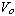
is connected across the capacitor, equal and opposite charges
rapidly collect onto the plates due to the electric field created by the
wires connecting the two plates1.
Once the plates are fully charged, one plate will have a net positive charge
while the other plate will have a net negative
charge
.
It has been shown empirically that the charge on one of the plates,
,
is directly proportional to the applied potential difference,
,
and the
constant of proportionality is known as the
capacitance2,
.
The amount of
charge on each plate in this steady-state is then written as
where
is in coulombs,
is in volts, and
is in farads (after 19th century
British physicists Michael Faraday). That is,
.
A one-farad capacitor
is physically quite large, so it is more common to see capacitors in the picofarad
( 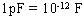 )
to microfarad
(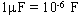 )
range. Since the capacitor charges
in some finite amount of time, the charge that exists on one of the plates at any
time, that is before a steady-state exists, is given by
When capacitors are connected together in series and then connected to a
battery, as shown in Figure 1, the same amount of charge must build up
on each of the capacitors. It can be shown that the behavior of these
capacitors is as if there was one single capacitor with an effective
capacitance,
,
given by the following
|
Capacitors in series
|
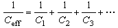
|
(3)
|
It should be readily seen that the effective capacitance of capacitors in series is
smaller than the capacitance of any of the contributing elements. However when
capacitors are connected in parallel, as shown in Figure 2, the effective
capacitance is given by the sum of each capacitance, or
|
Capacitors in parallel
|
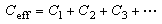
|
(4)
|
| |
|
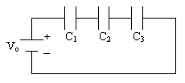
|
|
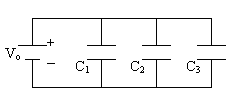
|
Figure 1. Capacitors in series.
|
|
Figure 2. Capacitors in parallel.
|
| Behavior of an RC Circuit |
| |
|
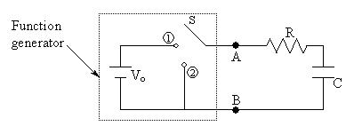
|
|
Figure 3. Schematic of an RC circuit. The components in
the dotted box are analogous to a square-wave generator with outputs
at points
and
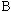 .
The switch continuously moves between points
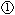
and
creating a square wave as shown in Figure 4a.
|
Suppose we connect a battery, with voltage,
,
across a resistor and capacitor
in series as shown by Figure 3. This is commonly known as an RC circuit and
is used often in electronic timing circuits. When the switch
is moved to
position
,
the battery is connected to the circuit and a time-varying current
begins flowing through the circuit as the capacitor charges. When the switch is
then moved to position
,
the battery is taken out of the circuit and the capacitor
discharges through the resistor. If the switch is moved alternately between
positions
and ,
the voltage across points
and
can be plotted and would
resemble Figure 4.
| |
|
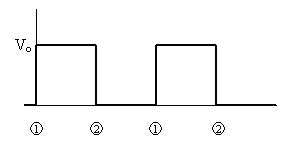
|
|
Figure 4. A voltage pattern known as a square wave. Moving the
switch in Figure 3 alternatively between positions
and
can
produce this voltage pattern. When the switch is in position
,
the input voltage is the peak voltage is
. When the switch is
moves to position
,
the input voltage drops to zero. A function
generator more commonly produces square-wave voltages.
|
This voltage pattern is known as a square wave, for obvious reasons, and is
commonly produced by a function generator. The function generator is capable
of producing voltages that behave like a sine, square or saw-tooth functions.
Additionally, the frequency of the wave may be varied with the function generator.
The dotted-box in Figure 3 may be thought of as a function generator with points
and
as outputs.
We will use a two-channel oscilloscope to monitor the important voltages
throughout the experiment. An oscilloscope is an invaluable tool for
testing electronic circuits by measuring voltages over time, and
Figure 5 shows the schematic for monitoring an RC circuit with an
oscilloscope. As shown in the figure below, the input voltage from the
square-wave generator is monitored by channel one (CH 1) and the voltage
across the capacitor is monitored by channel two (CH 2).
| |
|
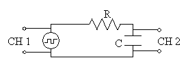
|
|
Figure 5. The RC circuit diagram. The oscilloscope's
Channel 1 monitors the function generator while Channel 2
monitors the voltage drop across the capacitor.
|
The capacitor responds to the square-wave voltage input by going through a
process of charging and discharging. It is shown below that during the
charging cycle, the voltage across the capacitor is
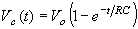
(see Equation 11
and Figure 6a below). When the switch is in position
,
the square-wave
generator outputs a zero voltage and the capacitor discharges. It can also
be shown that during the discharging cycle, the voltage across the capacitor
is
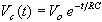
(see Equation 14 and Figure 6a below).
Circuit designers must be careful to ensure that the period of the square
wave gives sufficient time for the capacitor to fully charge and discharge.
It can be
shown3 that, as a
general rule of thumb, the time necessary for the
capacitor of an RC circuit to nearly completely charge to
,
or discharge to zero, is
.
Here it should be noted that the product
is known as the time constant,
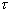 ,
and has units of
time4. The time constant is the characteristic time of the
charging and discharging behavior of an RC circuit and represents the time it
takes the current to decrease to
of its initial value, whether the capacitor
is charging or discharging. Over the period of one
,
the voltage across the
charging capacitor increases by a factor of
(see Equation 11). Conversely
the voltage across the discharging capacitor decreases by a factor of
over the
same period,
(see Equation 14). Put another way, in
the voltage across a
charging capacitor grows to 63.2% of its maximum voltage,
,
and in
the voltage
across a discharging capacitor shrinks to 36.8% of
.
| |
|
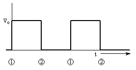
|
|
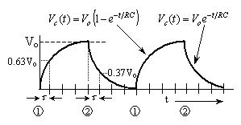
|
|
Figure 6a. The square wave that drives the RC circuit.
When the switch in Figure 3 is in position
,
the input voltage
is the peak voltage is
.
When the switch is moves to position
,
the input voltage drops to zero. In this experiment, this input
voltage is read by the oscilloscope's CH 1.
|
|
Figure 6b. The voltage drop across the capacitor of Figure 3
as read by the oscilloscope's CH 2. The capacitor alternately charges
toward
and discharges toward zero according to the input voltage
shown in Figure 6a. Here, the frequency (and therefore period) of
the input square wave voltage is exactly such that the capacitor is
allowed to fully charge and discharge. The time constant,
, is equivalent to
,
and is defined by Equations 11 or 14.
|
| A Charging Capacitor of an RC Circuit |
Say a square-wave voltage, like the one in Figure 6a, is applied across an
RC circuit. If one were to continually monitor the voltage across the capacitor,
the waveform would resemble that of Figure 6b. Note that when the switch is in
position
,
the square-wave generator outputs a voltage
and the capacitor
charges. Using Kirchhoff's rules we can examine the voltage drop across each
circuit component while the capacitor is charging,
where
is the battery voltage,
is the voltage drop across the resistor (according to Ohm's law), and
is the voltage drop across the capacitor (from Equation 2). (To simplify the
notation, the time dependence of the current and charge will be dropped from
our notation from here on.)
Substituting
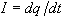
in Equation 5 and rearranging the equation, we can show
Integrating this equation and applying the initial condition
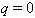
at
,
Equation 6 can be written5
Evaluating the integrals we find
It can be shown6 that Equation 8 simplifies to
|
Charge as capacitor charges
|
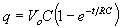
|
(9)
|
where
is the base of the natural logarithm. If we let
and differentiate Equation 9, we find7
the current in our circuit to be
|
Current as capacitor charges
|
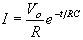
|
(10)
|
Using Equations 2 and 9, we
find8 the voltage drop across the
capacitor as it charges to be
|
Voltage across charging capacitor
|
|
(11)
|
Note that as
,
approaches ,
becomes ,
and approaches 0.
In other words, as the capacitor charges, its voltage approaches the
battery voltage and the charge on the capacitor plates approaches the
steady-state condition ()
as time increases as shown
in Figure 6b. The current approaches zero as the steady-state
condition is realized.
| A Discharging Capacitor of an RC Circuit |
With similar arguments we can determine the behavior of the capacitor
when it discharges. If we now move the switch in Figure 3 to position
,
the battery is removed from the circuit and the capacitor will begin
discharging. Applying Kirchhoff's law to the new circuit
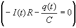
with an initial
condition of
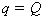
when
, we can examine the charge, current and
capacitor voltage as the capacitor discharges. It is left as an exercise to
derive the following equations:
|
Charge as capacitor discharges
|
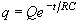
|
(12)
|
|
Current as capacitor discharges
|
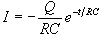
|
(13)
|
|
Voltage across discharging capacitor
|
|
(14)
|
Note that as
,
,
and
all approach 0. In other words,
as the capacitor discharges,
its voltage, charge and current all approach zero as the capacitor returns
to its initial state as shown in Figure 6b. As with the charging behavior
of the capacitor, it is important to note that if the half-period of the input
square wave voltage is less than
~,
sufficient time will not exist for the
capacitor to fully discharge! Again, proof of this is left as an exercise for
the student.
| |
|
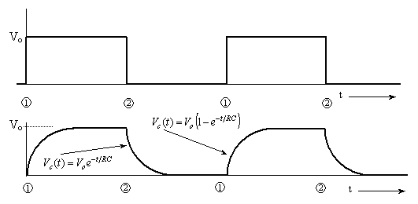
|
|
Figure 7. A square wave with a longer period drives the
RC circuit and the voltage response across the capacitor is
slightly different than that shown in Figure 6b. It can be
assumed that the circuits are the same for Figures 6 and 7.
The capacitor charges in the same amount of time as the one shown in
Figure 6b, but because the square-wave period is longer, the
capacitor here remains charged until the input voltage drops
once again to zero.
|
Finally it may be enlightening to examine the voltage response of the capacitor
when the period of the input voltage is such that the capacitor has ample time to
charge. This situation is shown in Figure 7. Note that here the capacitor
remains fully charges as long as the input voltage is
.
If we assume that
Figures 6b and 7 show responses of identical circuits (that is identical
time constants) then observe that the time to charge and discharge in both
figures are identical. The only difference is that in Figure 7 the
capacitor becomes fully charged and remains charged for a period of time.
In Figure 6b, the capacitor becomes fully charged and then immediately
begins discharging. However it is important to note that if the half-period
of the input square-wave voltage shown in Figure 6a is any amount less, then
sufficient time will not exist for the capacitor to fully charge or discharge!
- There is no conduction current,
,
flowing between the plates of the capacitor because the gap
between the plates constitutes an open circuit.
However, a displacement current,
,
does exist due to the changing electric field between the plates as
the capacitor charges. This term can be found in the general form of
Amp�re's law (also known as Amp�re-Maxwell law):
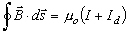 .
- The capacitance of the unit can be written
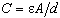
where
is the permitivity of the dielectric,
is the surface area of one of the capacitor plates, and
is the separation of the plates.
- See Question 6 in the question section of this laboratory write-up.
- See Question 5 in the question section of this laboratory write-up.
- See Question 11 in the question section of this laboratory write-up.
- See Question 12 in the question section of this laboratory write-up.
- See Question 13 in the question section of this laboratory write-up.
- See Question 14 in the question section of this laboratory write-up.
Objectives
- Become familiar with your oscilloscope. Your instructor will walk the entire
class through this Objective and discuss with
you the basic operations of an oscilloscope. You should know how to zero both
channels of the oscilloscope and put two traces on the screen simultaneously.
You should be able to adjust the vertical and horizontal position of the
scope traces. You should also be able to use the oscilloscope to read
voltages and times.
You should read several voltages including a AA battery, a 9-volt battery and
the oscilloscope's calibration output.
- Use the function generator, breadboard, oscilloscope and any necessary
wires to measure the frequency and amplitude of a ~100Hz sine wave at 25%-50%
maximum amplitude. Repeat for a ~750Hz square wave.
- Use the resistor color code and the DMM to determine the value of the
10kW resistor. Note that
the values of the three capacitors are as follows:
Brown = 0.1mF,
Green = 0.01mF,
Yellow = 0.001mF. Determine the theoretical
values for for three RC circuits using the resistor and the
various capacitors.
- Use the 0.1mF capacitor and the
10kW resistor and
wire your breadboard according to Figure 5. Carefully adjust the frequency
of the square wave and find the maximum frequency at which the capacitor
will fully charge or discharge.
- With the breadboard wired according to Objective 4, use the oscilloscope to
determine the experimental time constant,
,
for the capacitor charging and discharging. (Hint: Calculate
the capacitor voltage,
,
when
.)
- Use your breadboard to connect all three capacitors together in series.
Then, use the 10kW resistor with the capacitors in
series to form an RC circuit. Use the experimental apparatus and your knowledge
of RC circuits to determine the effective capacitance,
,
of the capacitors in series.
- Use your breadboard to connect all three capacitors together in parallel.
Then, use the 10kW resistor with the capacitors in
parallel to form an RC circuit. Use the experimental apparatus and your knowledge
of RC circuits to determine the effective capacitance,
,
of the capacitors in parallel.
Equipment and setup
Hints and Cautions
- Caution!!! Do not over-drive the function generator. Keep
voltage amplitudes to 25-50% of maximum output.
- Be careful when determining the period of a square wave.
Online Assistance
- The XYZ's of oscilloscope operation
- A nice oscilloscope
tutorial from Clemson's Bioengineering Department. (Must have Power Point
installed on your computer!)
- Resistor color codes explained
- Resistor color code calculator -- very cool
- Another color code calculator
- How to use a breadboard
- Another breadboard tutorial
- Some common circuit symbols
- Some more symbols
- Using Excel
Lab Report Template
Each lab group should
download the Lab Report Template
and fill in the relevant information
as you perform the experiment. Each person in the group
should print-out the Questions section and answer them individually.
Since each lab group will turn in an electronic copy of the lab report,
be sure to rename the lab report template file. The naming convention is as
follows:
[Table Number][Short Experiment Name].doc.
For example the group at lab
table #5 working on the Ideal Gas Law experiment would rename their template file
as "5 Gas Law.doc".
Nudge Questions
These Nudge Questions are to
be answered by your group and checked by your TA as you do the lab. They
should be answered in your lab notebook.
General Nudges
- What are the possible units of amplitude as measured by the
oscilloscope?
- What are the possible units of time as measured by the
oscilloscope?
Objective 1 Nudges
- Can you use the scope to monitor your heart rate in beats per
second? That is, can you use the scope as a timing device?
- What were the voltage of your batteries? Was this expected?
- What type of output was given by the scope's output calibration?
- What was the calibration voltage's period and amplitude?
Objective 2 Nudges
- What oscilloscope channel are you using?
- What are the amplitudes of the waves?
- What are the periods of the waves?
Objective 3 Nudges
- How does the color code reading compare to a DMM reading of resistance?
- What are the units of ?
- Which combination of R and C will require the most time for the capacitor
to charge?
- How does the time to charge the capacitor compare with the time to discharge
it?
Objective 4 Nudges
- Using the oscilloscope, what is the value of the frequency that you
using for this Objective? How does this compare to the dial reading of the
function generator?
- What is each channel of the scope monitoring?
- Will the capacitor ever fully charge?
- Is the time for the capacitor to approximately fully charge
?
- What happens to the behavior of the capacitor voltage as the
frequency is varied? Can you explain this?
Objective 5 Nudges
- What is the definition of the time constant,
?
- How is
measured?
- How do your values for
compare to your theoretical value?
Objective 6 Nudges
- What should the theoretical value of
be?
- What are the parameters of the input signal of your circuit? (E.g., what
is the shape, amplitude, frequency of your input wave?)
- How do you take the voltage across three capacitors in series?
- What is the measured time constant,
,
for this circuit?
- Does the theoretical value of
agree with your experimental value?
Objective 7 Nudges
- What should the theoretical value of
be?
- What are the parameters of the input signal of your circuit? (E.g., what
is the shape, amplitude, frequency of your input wave?)
- How do you take the voltage across three capacitors in parallel?
- What is the measured time constant,
,
for this circuit?
- Does the theoretical value of
agree with your experimental value?
Questions
These Questions are also found in the lab write-up template. They must be answered by
each individual of the group. This is not a team activity. Each person should
attach their own copy to the lab report just prior to handing in the lab to your
TA.
- i. What quantities can be measured by an oscilloscope?
ii. The frequency and period of a sine wave are measured in what units?
- Show that
has units of time. Recall
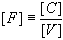 and
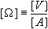 .
- Use Equations 2 and 9 to show that the voltage across capacitor is
while the capacitor is charging.
- i. Show that,the time necessary for the capacitor of an
circuit to charge to 98 % of the input voltage or discharge to 2 % of the input voltage is ~
.
You can show this theoretically using Equations 11 and 14.
ii. Is the characteristic time constant the same when the capacitor is
charging and when it is discharging?
- Describe the voltage response of the capacitor of an
circuit to a square
wave whose half-period is
i. Significantly smaller than
.
ii. Significantly greater than .
- A square wave is input into an RC circuit allowing the capacitor to charge
and discharge. The input voltage,
,
and capacitor voltage,
,
are shown below in the left image. How would the input frequency
need to be changed to get
to look like the image on the right? Can you think of two other ways to
alter the circuit that would cause
to look like the right image?
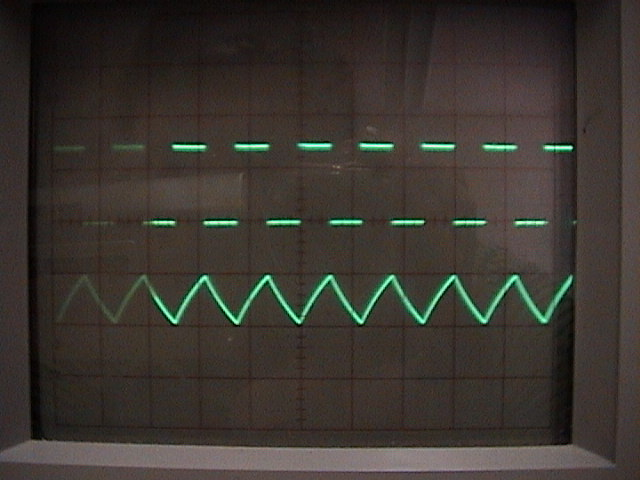
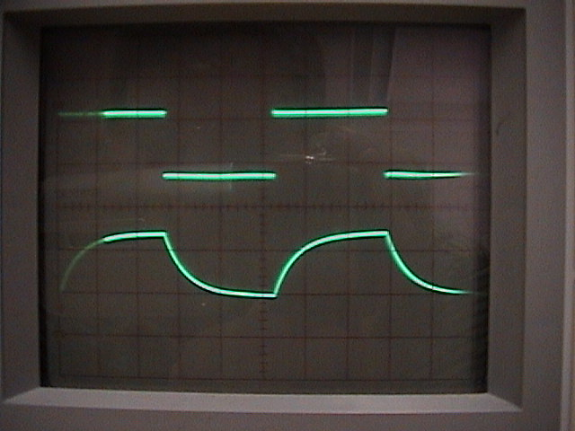
[Click on images to enlarge them]
TA Notes
- You should work closely with students on Objective 1. Students have a
very difficult time using the oscilloscope for the first time.
Perhaps you should
view Objective 1 as an activity that will be lead by the TA in which the
entire class will follow, step-by-step.
- The calibration outputs for the oscilloscopes are as follows:
- Heath: 2.0V peak-to-peak, ~0.96ms period.
- Goldstar: 0.5v peak-to-peak, 1.0ms period.
Data, Results and Graphs
Answers to Questions
Lab Manual
CUPOL Experiments
As of now, there are no
CUPOL experiments
associated with this experiment.
If you have a question or comment, send an e-mail to Lab Coordiantor:
Jerry Hester
223 & 224 Lab Overview |
Return to Physics 223 Labs
|
|